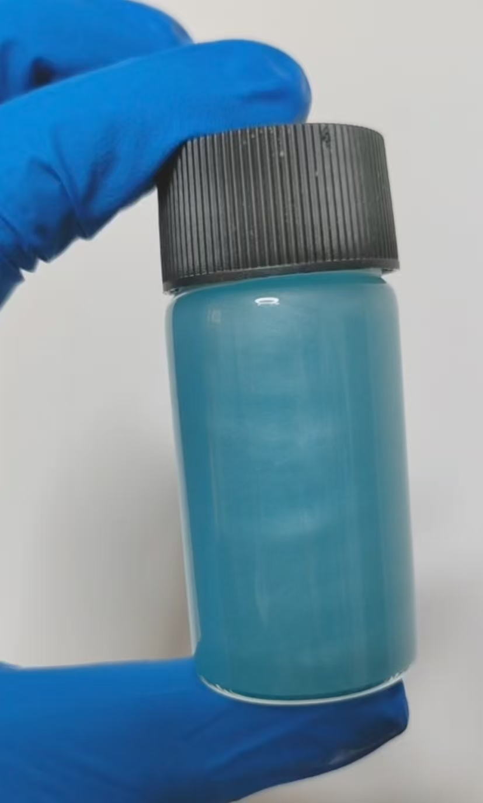

图源：迷路的野指针
化学式：(NH₄)₃H₆[CoMo₆O₂₄]·xH₂O
材料：硫酸钴、仲钼酸铵、过硫酸钾、蒸馏水、烧杯、表面皿、西林瓶
由于青晶雨的稳定性问题，不推荐长期保存或作为观赏工艺品。如需展示，建议在制备后短时间内进行观察和摄影。
由于晶体稳定性差，不建议作为长期观赏工艺品。装瓶后的西林瓶/螺口瓶应小心保管以防破裂，且需明确标注制备日期和有效期。
如果您想通过视频更直观地学习制作青晶雨，可以参考以下视频：
该视频详细展示了从溶液配制到完成制作的过程，适合视觉学习者参考。
本章作者